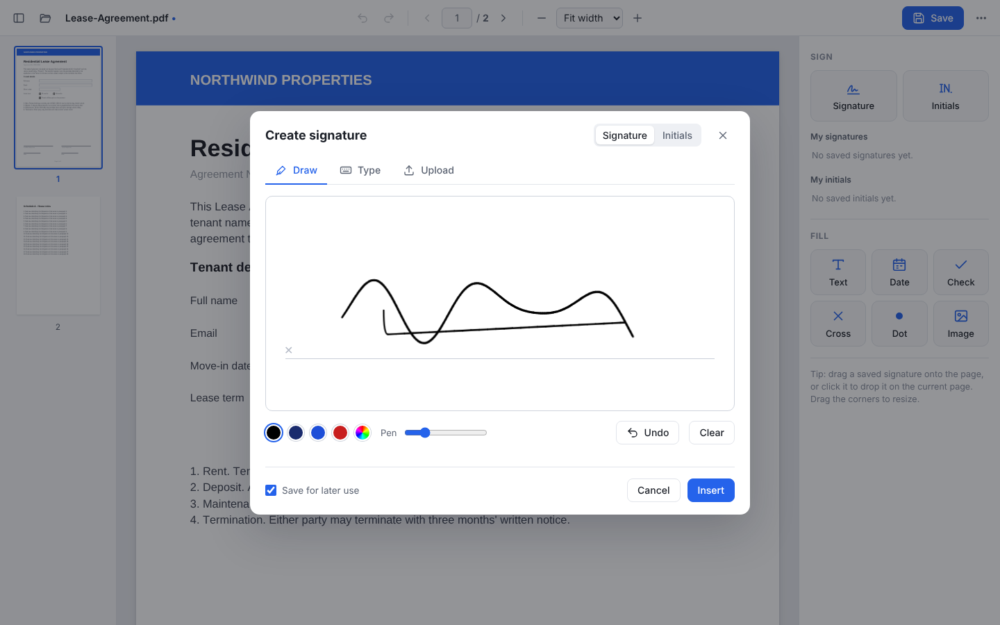
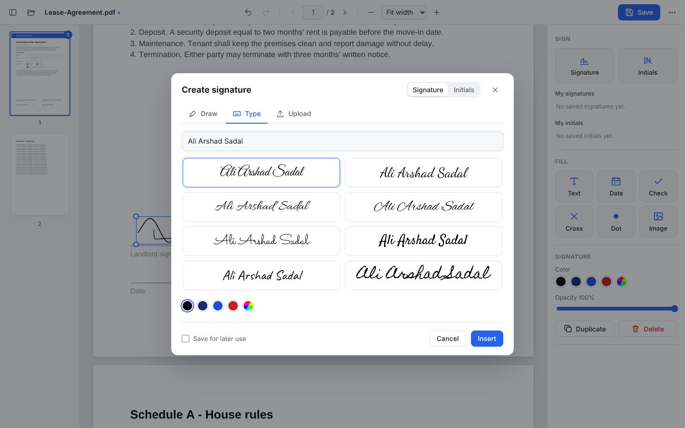
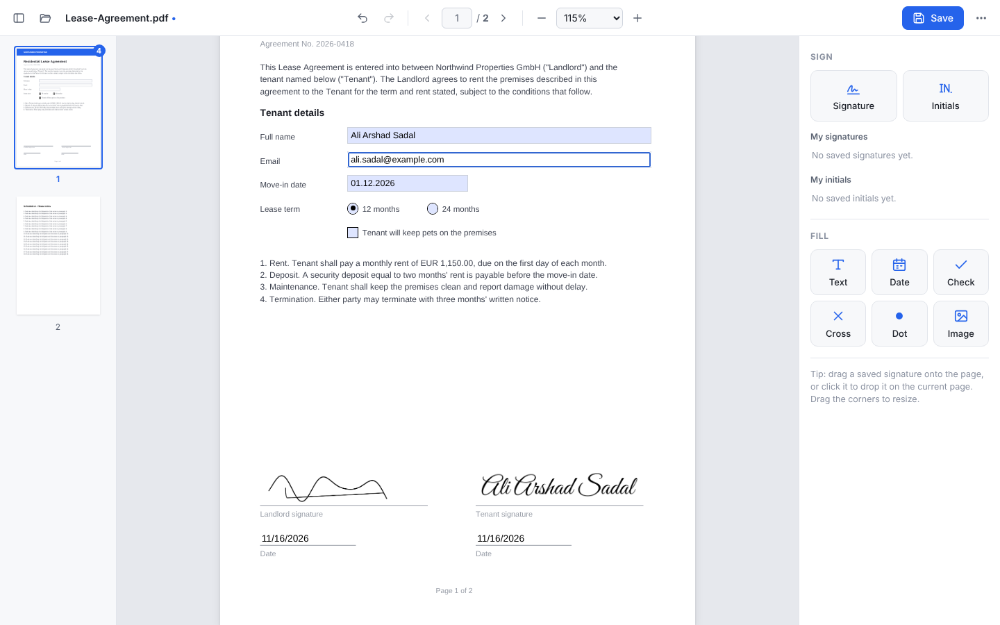
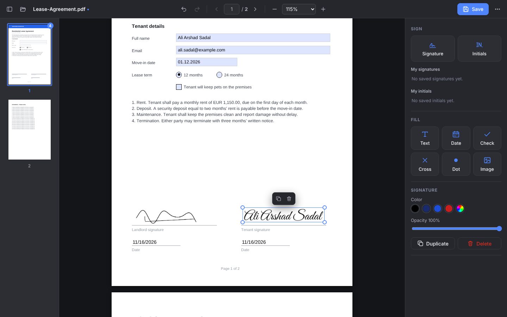

Everything you need to sign a PDF
A fast, private PDF signing app for contracts, leases, school forms, HR paperwork, invoices and more.
Draw your signature
Sign with a mouse, touchpad, finger or stylus. Pen pressure and speed-sensitive ink look like real handwriting.
Type it
Type your name and pick one of 8 handwriting fonts. Initials are supported too.
Upload a photo
Use a picture of your signature. The paper background is removed automatically.
Fill PDF forms
Text fields, checkboxes, radio buttons and dropdowns, filled right on the page. They stay editable in the saved file.
Click-to-sign fields
"Sign here" boxes are detected automatically, and your signature is fitted into the box.
Text, dates & marks
Add text in any size and color, dates in 6 formats, checkmarks, crosses, dots, logos and stamps.
Exact placement
What you see is what you get, even on rotated or cropped pages. Added text stays real, selectable PDF text.
Private by design
100% offline. Your documents and signatures never leave your computer. No account, no tracking.
Lightweight & free
Open a PDF, sign, save. Undo/redo, saved signatures, dark mode and keyboard shortcuts.




How to sign a PDF in 3 steps
Most documents take less than a minute.
Open your PDF
Click Open PDF or drag the file onto the window. Fill in any highlighted form fields.
Add your signature
Draw, type or upload it, then drag it into place and resize it. Or click a "Sign here" field.
Save
Click Save to get a new -signed.pdf file, ready to email, upload or print. Your original is never overwritten.
Frequently asked questions
Is PDF Signature really free?
Yes. It's free and open source (MIT license), with no ads, watermarks, trials or sign-up.
Are my documents uploaded to the cloud?
No. Everything happens locally on your PC, and the app works without an internet connection.
Can I fill out PDF forms with it?
Yes. Standard fillable PDF forms (AcroForm) are supported, including signature fields. Dynamic XFA forms (an older Adobe LiveCycle format) are not.
Is the signature legally binding?
PDF Signature adds a visual electronic signature (an image of your handwritten signature), as if you signed a printout and scanned it. That's accepted for many everyday documents. It isn't a certificate-based cryptographic digital signature (PAdES/QES), which some legal processes require.
Windows says "Windows protected your PC". Is it safe?
The app isn't code-signed yet, so SmartScreen shows a warning for new apps. Click More info → Run anyway. The complete source code is public on GitHub.
Does it work on a touchscreen or with a stylus?
Yes. Finger and pen input are supported, including pen pressure for natural-looking strokes.
Sign your next PDF in seconds
Free for Windows 10 & 11. No account required.
⬇ Download PDF Signature